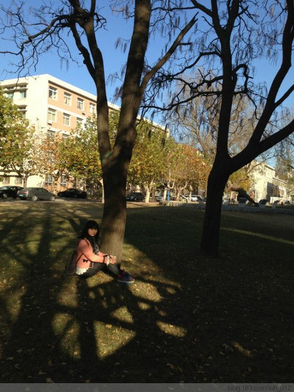

2013-11-10 不用悲秋
目录
大连今天下午，下了一场小小小雪。也就意味着，秋天过去啦。好像这是本科时代的最后一个秋天哦，明年的这个时候，我就不在这儿啦。
很忙，在大工银杏最漂亮的时候没有来得及去拍一些照片，只能在某个实验上完了还有空闲时间随便拍两张作为回忆的凭证。但是也不错啦，不管怎么样，总之，亲爱的Sophia，觉得自己不愧对于这段路程就OK啦。
建馆前的小木屋
 我们目前在准备APS审核，我们一起备战的小伙伴之一闫家胜童鞋明天审核。祝一定过啊。
其实我特希望12月末审核，那会儿我过生日，可以跟妈妈爸爸弟弟多在一起待几天。真是的，每年的生日都不跟家人一起过，真是的真是的真是的。
也有好消息啦。姐姐结婚，我是她和河哥这一路走来从开始到现在的最长见证人吧。当时我还在念高二，姐姐念高三，哈哈。
她从小丫头变成最漂亮的新娘，我很感动，也特别不舍。
一眨眼呢，时间就这么过了。我们就长大了。以前我盼望爸爸妈妈让我管一下家里的事情，现在，是庆幸还没有跟我商量。因为这代表着他们还没有老去，还支撑和照顾这个家。但是我知道有一天总会发生，他们会依赖我，那时我要为他们做饭，要买衣服给他们，要安排他们的生活。
我每次去KTV唱歌，王筝的《爸爸》是必点歌曲。这首爸爸，是我对爸爸妈妈的感激，是我的记住，无论什么时刻。
生命中要发生的事情，就像四季变换，一个轮回，不可阻挡，不能改变。而最可贵的是，我们只有一个轮回。
这仅有一次的生命，是多么可贵，是多么充满希望。
我永远也不会轻生，活着的美好是什么也比不了的。我知道我以后会遇到很多困难，但是家人就是我的正能量。
我要变得更加漂亮，我要活得有意义，我要实现自己的梦想。一想到这些我都是可以掌控的，内心便涌起无限激情。